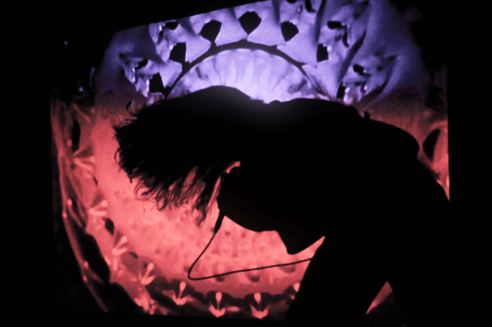
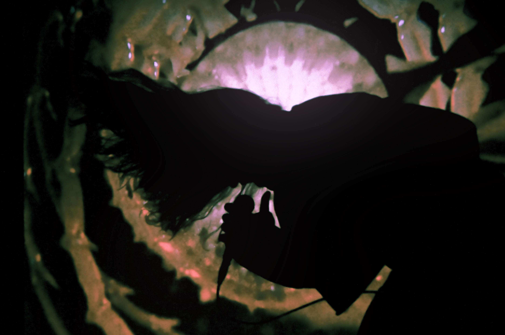
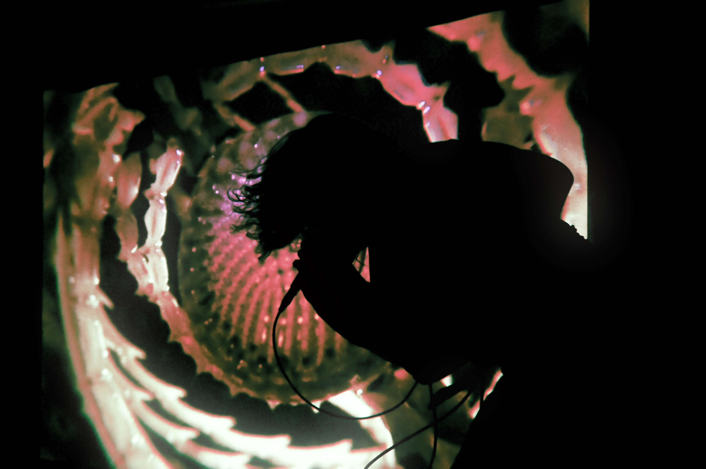
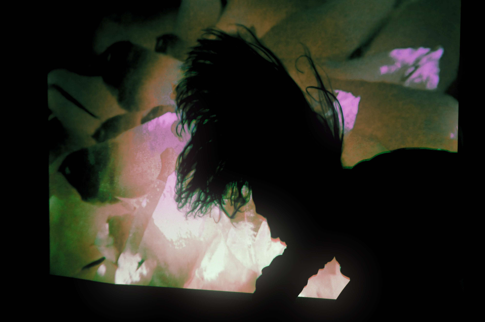

AUDIO VISUAL MEDITATION
0:00 / 0:00
KAIN: A PERFORMANCE ART PROJECT
FOCUSSED ON THE EXPLORATION OF
SOUND
VISUAL
MOVEMENT
40 MINUTES
INDUSTRIAL NOISE
SOOTHING SOUNDS
CHANTS AND CLASSICAL SINGING
DATES:
16 AUGUST 2025 FABRIK DER KUENSTE KREUZBROOK 10/12
31 OKTOBER 2025 ZEISEWEG BODENSTRASSE ALTONA
TBA
BOOKING/CONTACT:
JADE.KAIN.COFFI@GMAIL.COM
PRESS:



